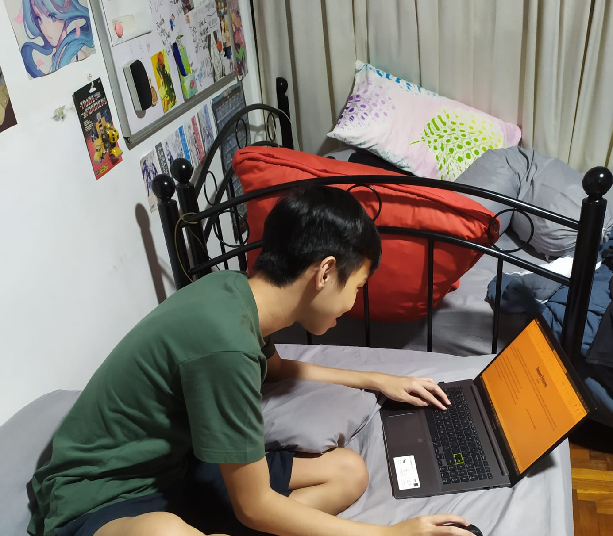

Singapore Polytechnic
so possible
Enrolling into SP was an exciting experience. Returning to having school after a almost 6 month break was refreshing, especially since poly is such a different environment from secondary and primary school. It took a few days to get used to the travelling, the laptop usage, the lessons, the campus, and the food, but I feel relatively at home here now.
The flipped classroom format has been interesting to say the least, the huge emphasis on self-directed learning had me stumped at first, as I thought it was strange that I am expected to learn things on my own at home when I enrolled in the school so I could learn everything at said school, but I now have adjusted and can see the benefits of this approach now.
Another perk of poly life is being able to eat at pretty sophisticated food courts. Here is my review of the food courts in SP
FOODCOURT REVIEW TIME
FC1: "It's insane that the curry rice gives huge portions at only $5. In fact, it was far too big of a portion, it practically left me and my friends in a food coma. Would recommend but be sure to share one plate with someone else."
FC2: "I haven't actually dined at FC2 yet, but the environment looks alright, it has AC, and the SP shirts happen to be sold here as well so bonus points for that i guess ;)"
FC3: "I haven't dined at FC3 before, it has no AC, and I have heard that many of the good stalls at FC3 are gone now, worth a try in the future though."
FC4: "This has been THE go-to food court. Good variety of stalls at decent prices, especially chicken rice stall. That and Taiwan cuisine have my favourites. FC4 is located just at the business school so it is near SoC. Definitely the top food court overall."

FC5: "It is simply Subway, KFC and some smaller stalls put together. Pretty cool food court though, because you would never see something like this outside of polytechnic. Food was as expected. FC5 is actually located at a reasonable distance away from SoC so it is fairly convenient."
FC6: "FC6 is a strange food court. When I first visited it, it reminded me of a school canteen. Everything from the design of the stalls, the benches and tables were giving me school canteen vibes. However, the food prices seem quite high. Props to the waffle store though! Bonus points for the convenience too."
My Future Career
The dreamjob for me would be video game development seeing how passionate I am about games. but seeing that there are limited opportunities for that in Singapore, that dream may not be very practical for me in the near future. With my IT knowledge and specialization in AI coming out of poly.
I hope to be able to eventually achieve this sometime in my life, but I am also content with working in the IT space until then. There should be plenty of opportunities awaiting me, including machine learning among other IT related things. However, I have not put too much thought into my career yet, so I shall wait and see as poly life goes on.